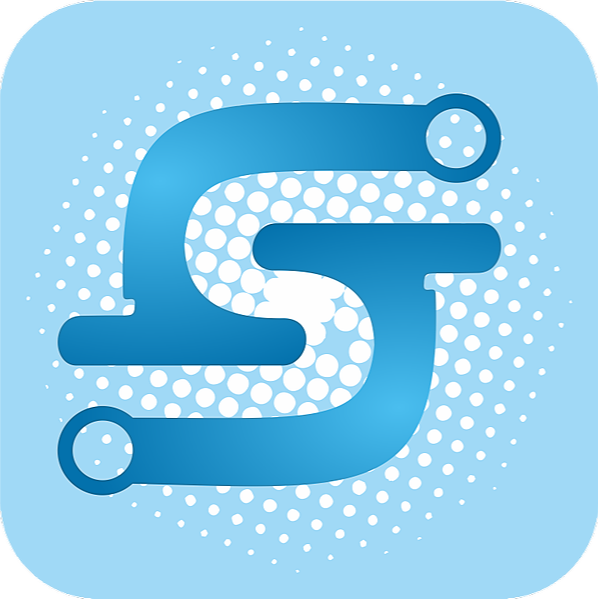

UAS Manajemen Proyek
19.N1.0021
19.N1.0023
19.N1.0015

Visi Siega UNIKA
Menjadi komunitas akademik yang unggul dalam pendidikan, penelitian dan pengabdian dengan dilandasi nilai-nilai Kristiani: cinta kasih, keadilan dan kejujuran
Misi Siega UNIKA
Menyelenggarakan pendidikan yang berkualitas secara akademik dengan didukung pengembangan kepribadian yang utuh dan potensi kepemimpinan.
Melakukan penelitian untuk pengembangan ilmu dan teknologi demi meningkatkan kesejahteraan manusia.
Melakukan pengabdian kepada masyarakat sebagai penerapan ilmu dan teknologi yang telah dikembangkan dalam penelitian dan kesejahteraan manusia.
Memberikan perhatian dan mencari pemecahan terhadap berbagai masalah sosial budaya masyarakat melalui komunitas akademik.
Mengembangkan jaringan Kerjasama dengan berbagai institusi pendidikan, penelitian dan pengabdian lokal, nasional dan internasional untuk meningkatkan kualitas pendidikan dan penelitian.
Memperbaiki dan mengembangkan universitas secara terus menerus, sehingga dapat mendukung segala upaya untuk mencapai keunggulan. Memperbaiki dan mengembangkan universitas secara terus menerus, sehingga dapat mendukung segala upaya untuk mencapai keunggulan.